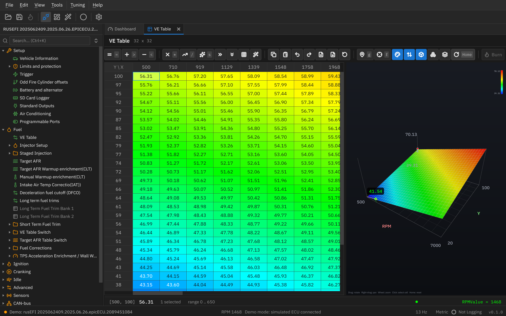
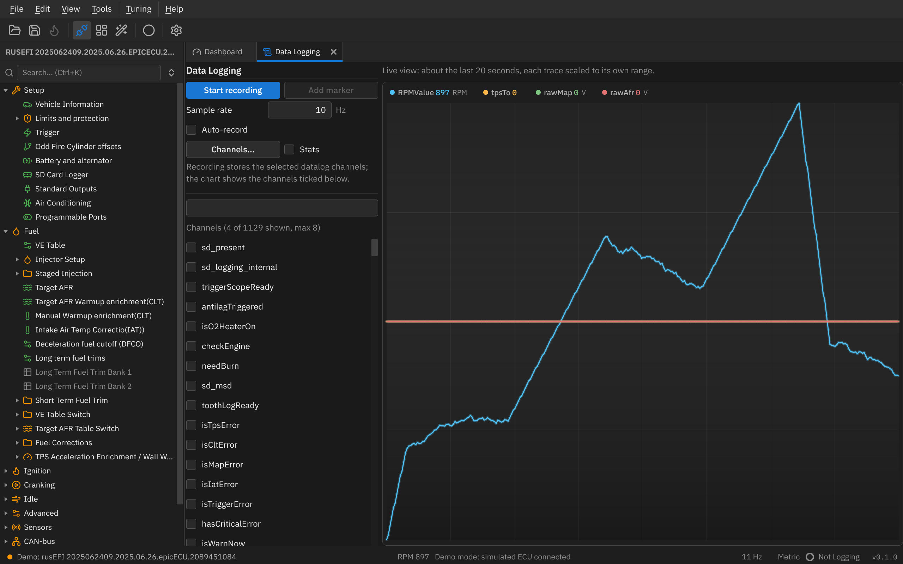
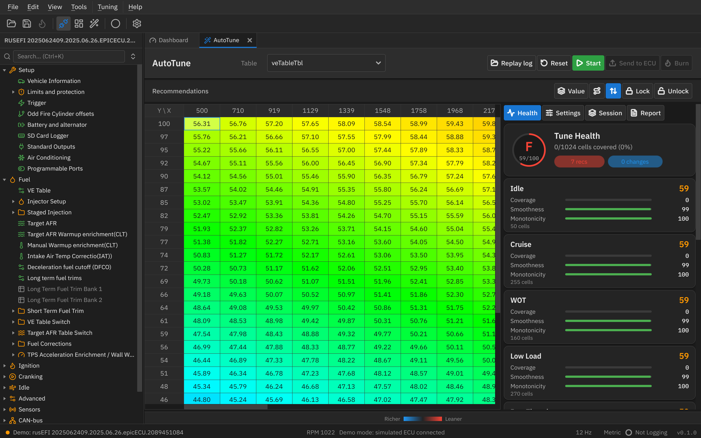
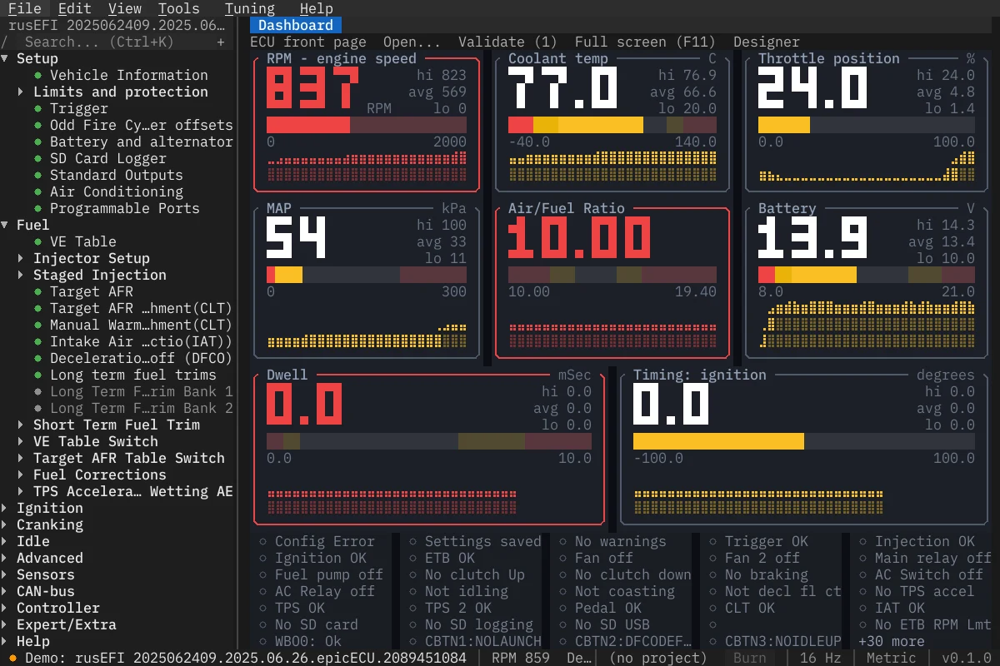

A tuning session
From base map to a tune you trust
clibretune reads the INI definition your firmware ships with, so every menu, table and gauge is the one your ECU actually has.
-
01 Table editor
Edit tables the way you think about them
VE, ignition and AFR tables are heat-mapped and sit beside a 3D surface you can rotate. Select a range and smooth it, interpolate across it, scale it or step it from the keyboard, and let the cursor follow the engine's live operating point while it runs.
- s
- Smooth
- /
- Interpolate
- *
- Scale
- +-
- Step
- f
- Follow
- g
- Go to live cell

-
02 Data logging
Log what the engine is doing
Record any of the ECU's output channels (the demo definition has 1,129 of them) at the rate you choose, drop markers when something happens on the road, and keep every log with the project it belongs to.

-
03 AutoTune
Let the data correct the VE table
AutoTune compares measured AFR with your target and recommends changes cell by cell, live or from a replayed log. Lock the cells you already trust, watch coverage and health for idle, cruise and WOT, then send the result to the ECU and burn it.



Also in the box
- DashboardsAnalog and bar gauges, indicator panels, and a designer to lay out your own.
- ProjectsTunes, logs and dashboards for one car, kept together in one folder.
- Restore pointsTune history with restore points, so a bad change is easy to undo.
- Demo modeA simulated engine in the same process, for learning without hardware.
Platforms
Runs on whatever is in the car
The same binary opens a native window when it can, and falls back to a browser or a terminal when it can't. There's an ARM64 Linux build for a Raspberry Pi behind the dash.
- x11 · cocoa · win32
- Native windows with no GUI toolkit. On Linux it speaks the X11 protocol itself.
- web
- Serves the UI to your browser on 127.0.0.1 behind a tokenised URL.
- tty
- The whole application in a terminal, including one over SSH.
libretune --backend tty --demo --ini demo.ini

Specifications
What's inside
Written to the Universal C rules: one codebase for every platform, and no third-party code.
| ECU definitions | INI files for rusEFI, Speeduino and MegaSquirt-style firmware |
|---|---|
| Connection | Serial or TCP, plus a built-in ECU simulator |
| Files | .msq tunes, .mlg data logs, project folders |
| Language | C89. Warning-free with gcc and clang from -std=c89 to -std=c2x, and with MSVC |
| Source | About 115,000 lines of C |
| Dependencies | None. On Linux the binary links only libc and libm |
| Binary size | 2.9 MB on Linux and Windows, 5.1 MB macOS universal |
| Automation | Read-only MCP server over stdio with --mcp |
| License | GPL-2.0-or-later |
Download
Get clibretune v0.1.0
One file per platform. Download it, make it executable, run it.
| Platform | Architecture | Size | Link |
|---|---|---|---|
| Windows | x86-64 | 2.9 MB | Download |
| macOS | Apple Silicon + Intel | 5.1 MB | Download |
| Linux | x86-64 | 2.9 MB | Download |
| Linux | ARM64 / Raspberry Pi | 2.9 MB | Download |
Also on the release: Windows console build, SHA256SUMS. Every push to main also builds a nightly.
No ECU on the bench?
Grab demo.ini and start the simulator. Everything on this page works in demo mode.
chmod +x libretune-linux-x86_64
./libretune-linux-x86_64 --demo --ini demo.iniFirst launch
macOS blocks binaries that aren't notarized. Run this once:
xattr -dr com.apple.quarantine libretune-macos-universalWindows SmartScreen may warn about an unsigned download. Click More info, then Run anyway.
Questions
Before you start
How is this related to LibreTune?
It's a from-scratch rewrite of LibreTune in C. It follows the original's behaviour and file formats, without the Rust and Tauri runtime.
Will it work with my ECU?
If your firmware ships an INI definition in the format rusEFI, Speeduino and MegaSquirt use, clibretune builds its menus, tables and gauges from it. Try demo mode first to get comfortable.
Is it finished?
Not yet. The day-to-day workflow is there, and the known limitations are listed in the README. Keep a backup of your tune.
How do I build it myself?
Any C compiler will do. Clone the repo and run ./build.sh app, or build.bat
from a Visual Studio prompt.